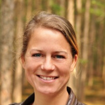

Ilse Vlaming (‘73)
Typisch Ilse
- Netwerker
- Initiatiefrijk
- Organisator
- Punctueel
- Inlevend
- Volhardend
- Hands on
- Leuk
Mijn ambitie
... is om nu mijn kinderen ouder zijn en we thuis in rustig vaarwater verkeren mijn energie en talenten in te zetten voor een lokaal groen project.
Ik kijk er naar uit om lange relaties op te bouwen en bij te dragen aan het welslagen van lange termijn projecten. Ik vind het heerlijk om op verschillende borden te schaken, het overzicht te houden om uiteindelijk met elkaar een behaald doel te kunnen vieren.
Werken als teamleider voor het Goois Natuurreservaat biedt mij de kans mijn talenten voor mijn passie in te zetten.
Laarderweg 306, 1403 RR Bussum
06 41 848 766
Mijn loopbaan
... begon direct na mijn afstuderen aan de School voor Journalistiek en Voorlichting (HBO) in ’97 als journalist bij Medisch Contact. Kwaliteiten als netwerken, plannen, structuren, coördineren en met verschillende doelgroepen kunnen communiceren heb ik vervolgens in verschillende functies vervolmaakt.
In 2010 ben ik meer projectmatig gaan werken. De Groene Giraf, Watt Nu en verschillende projecten voor milieuraad Bussum heb ik geïnitieerd en gerealiseerd. De afgelopen jaren heb ik ervaring opgedaan met bouwprojecten en planmatig werken. In 2019 hoop ik me te kunnen inzetten voor een nieuwe grote uitdaging waarin mijn passie voor mens en milieu alsmede mijn talenten samen komen.
Voor een uitgebreide versie verwijs ik graag door naar mijn LinkedInprofiel.
Mijn grootste talent
... is dat ik in chaotische situaties overzicht houd en naar opbouwend resultaat streef. Ik schakel gemakkelijk tussen verschillende doelgroepen.
Ik luister, ben attent, open en durf mensen de ruimte te geven om te doen waar zij goed in zijn. Ik doorzie snel waar het om gaat en wat er nodig is om een doel te bereiken. Ik ben proactief en ga uitdagingen aan.